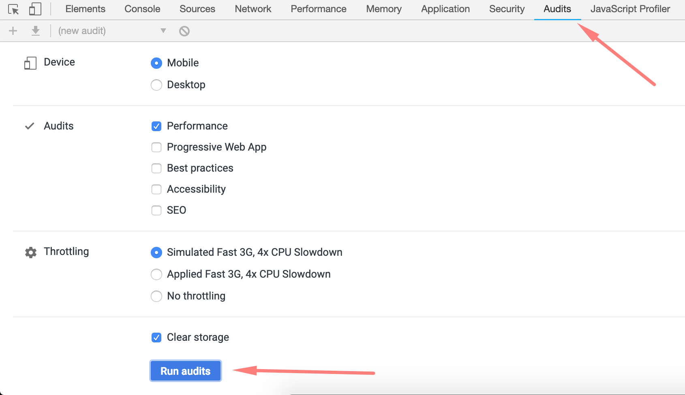

Original
Step 1
- Чистка html
Step 2
- Оптимизация изображений
Step 3
- Удаление неиспользуемых скриптов
Step 4
- Удаление неиспользуемых стилей
Step 5
- Неблокирующий css и js
Step 6
- Критический css
Step 7
- Lazy load
Step 8
- Локальные шрифты
Step 9
- Уменьшение размера изображений
Step 10
- Минификация HTML
